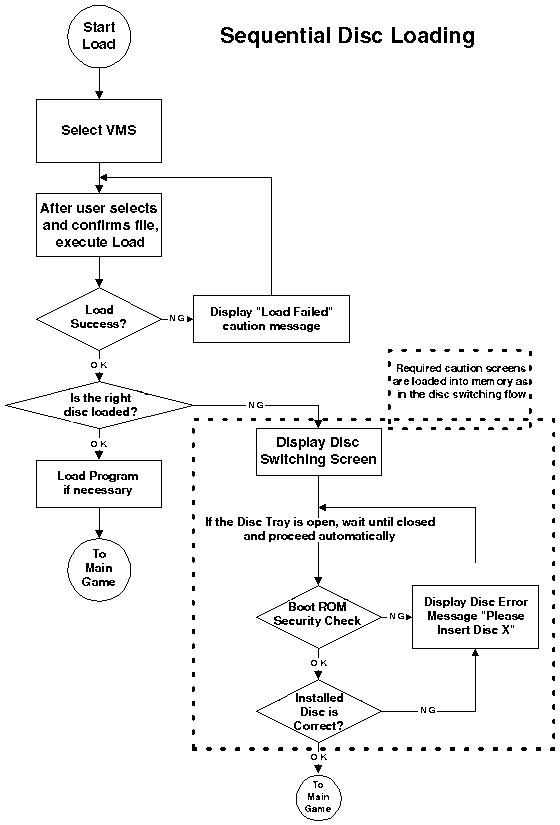

Dreamcast Software Development Standards/Ver. 2.00EU
17. Changing Discs for Multi-Disc Applications
17.1 Disc Switching Preconditions
When performing a disc check to determine whether a disc is a "Special Dreamcast Disc," this version of Dreamcast does not require that the Main Unit Boot ROM Menu (the multi-player screen in Saturn) appear. However, because a soft reset might be needed when subsequent discs in a series are loaded, we believe that the Title Screen and Copyright Display may be needed.
Also, the software creation standards of 15. Backup and other sections should always be followed unless specifically exempted.
17.2 Booting with Discs after the First
Required: Other than the exceptions in 17.2.1, booting should comply with the conditions of 3. Sequences Before Game Start.
17.2.1 Exceptions for Booting from Discs after the First
- Demos
- Start/Option Selection Screen
- Options
- A Title Loop is not necessary if there is no Demo.
17.3 Soft Reset During Game Play
As described in 4.1.4.2 Omnibus System Case, executing a soft reset from the Title Loop of any disc brings up the Main Unit Boot ROM Menu (the Multi-Player screen in Saturn).
 17.3.1 Soft Reset from the Disc Switching Screen
17.3.1 Soft Reset from the Disc Switching Screen
Setting the soft reset jump destination to the Main Unit Boot ROM Menu allows the user to check the title and saved files on the menu if he inserts the wrong disc.
When a soft reset is done before the disc door is opened on the disc switching screen, jump to the "Disc title screen".
Recommended: When a soft reset is done from the end of the disc switching screen (when the door is opened and reclosed) until the beginning of the next main game, jump to the Main Unit Boot ROM menu.
The following exceptions to the above are also allowed depending on the application conditions.
- Jump destination is made the "Disc Title Screen"
- Soft Reset operation is disabled.
 17.4 Switching Discs During Game Play (e.g., to Disc 2
when finished with Disc 1)
17.4 Switching Discs During Game Play (e.g., to Disc 2
when finished with Disc 1)

After switching discs, a soft reset jumps to the Boot ROM menu, from which it is conceivable that the user could start the new disc's game. However, this is not recommended, and so should not be implemented.
Considering the particular case where the user turns power off when switching discs, it should be possible to save data so that play can immediately continue when power is next turned on.
Because the Main Unit Boot ROM Menu (Saturn's Multi-Player screen) is not executed when switching discs, if the correct disc does not load, the caution screens will not be available unless they have been stored in memory beforehand.
17.5 Loading From Multiple Discs (Loading Save Files for Different Discs)


Copyright SEGA ENTERPRISES, LTD., 1998,1999 and Sega Europe 1999